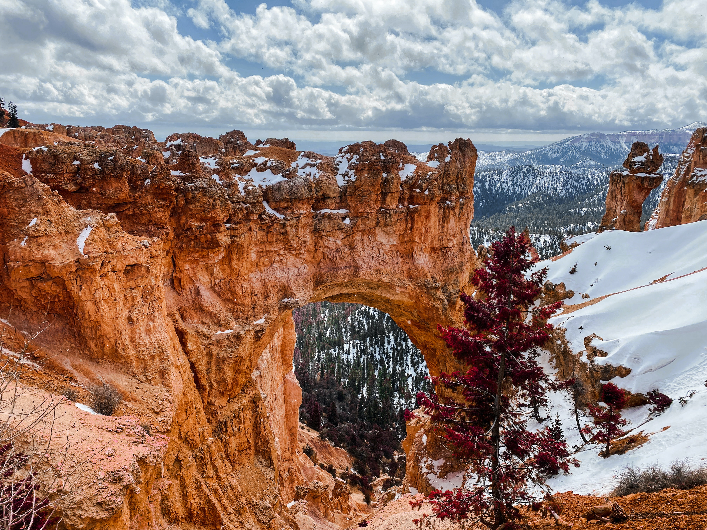
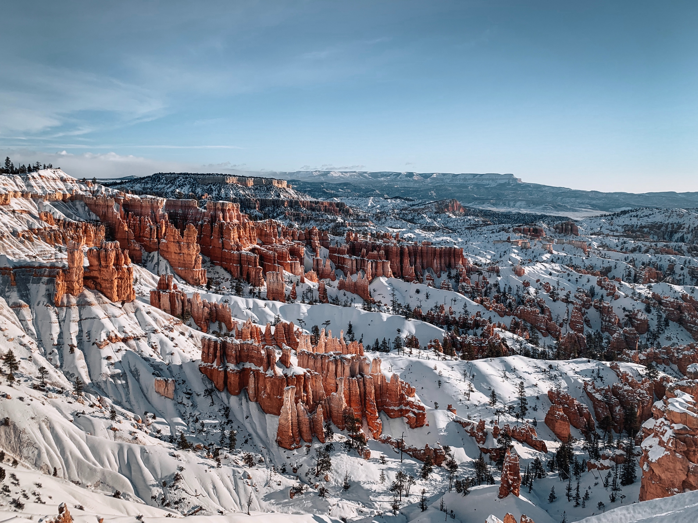
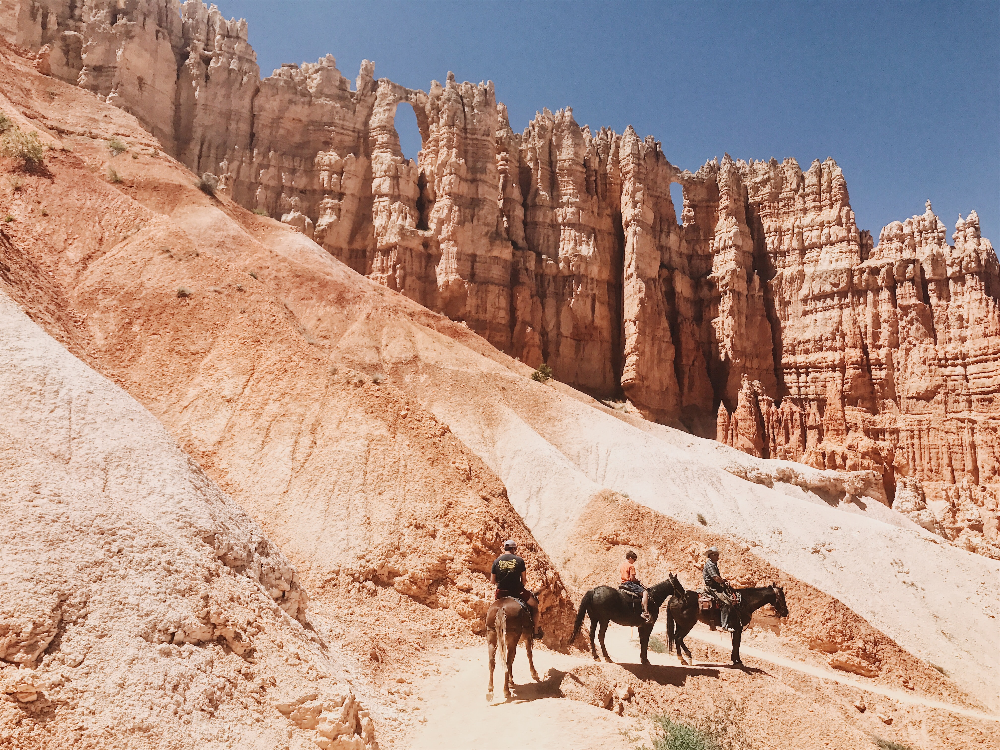
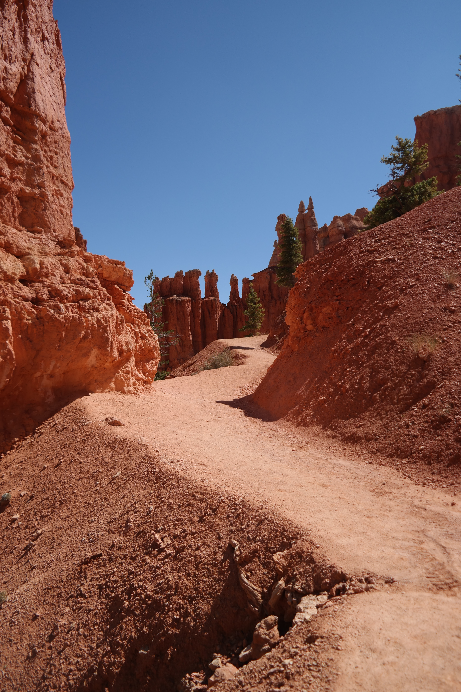
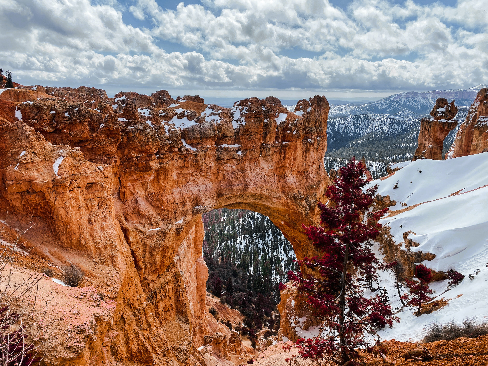
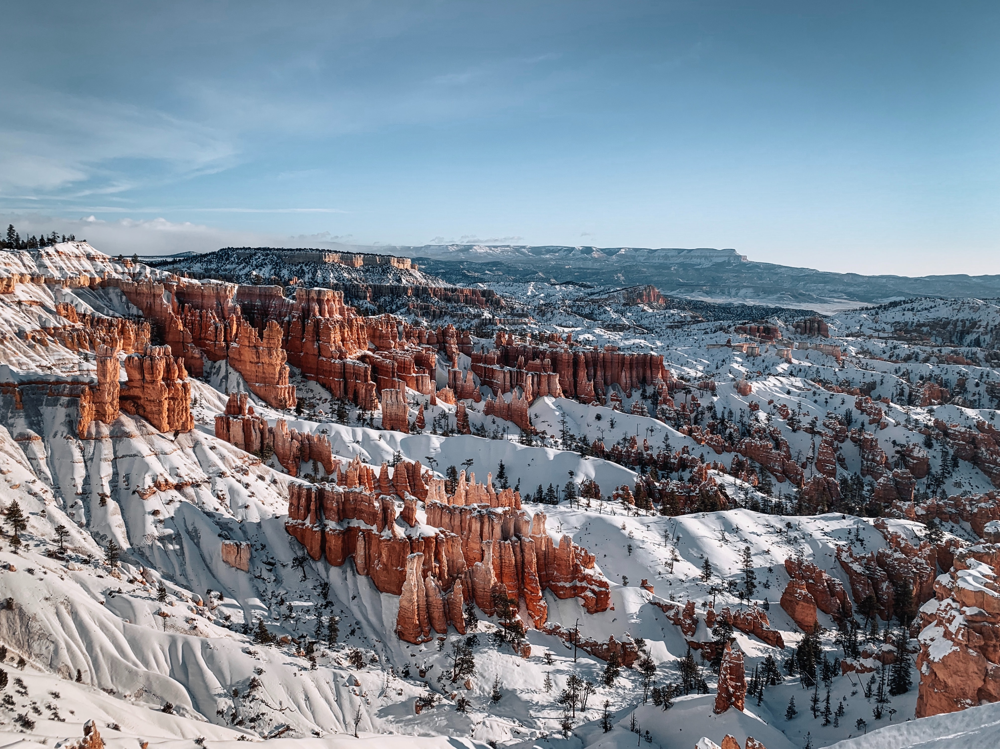
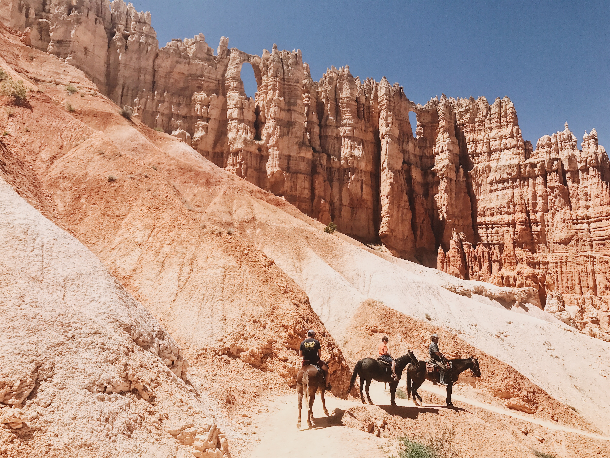
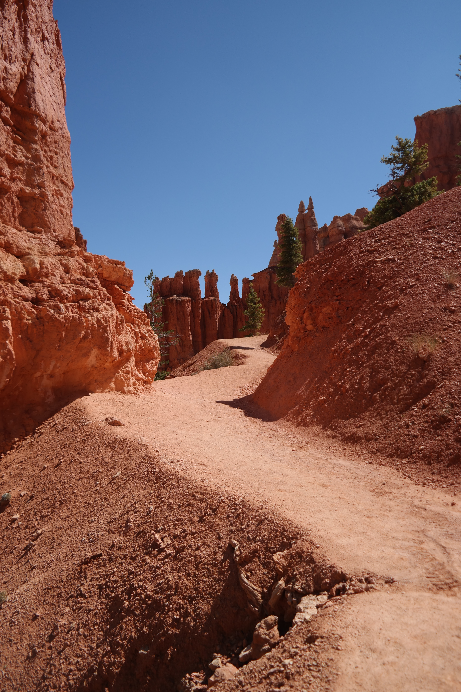

Bryce Canyon is not a single canyon, but a series of natural amphitheaters or bowls, carved into the edge of a high plateau. The most famous of these is the Bryce Amphitheater, which is filled with irregularly eroded spires of rocks called hoodoos. Between April and October a shuttle service is operated in this area of the park to reduce congestion. Over two million visitors come to experience the otherworldly magic of Bryce Canyon National Park each year, most between March and early October.